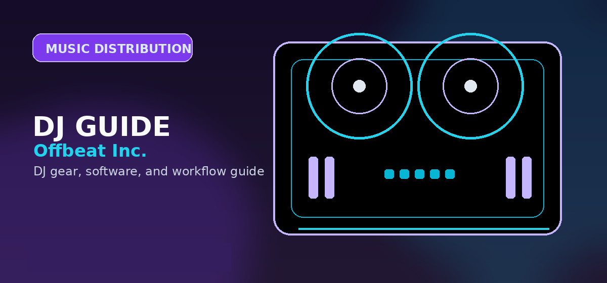

SoundCloud vs Bandcamp: Platform Comparison for Independent Musicians
SoundCloud vs Bandcamp 2026: artist payouts, discoverability, community, and which music platform is actually worth your time as an independent artist.

Both platforms serve independent musicians. But SoundCloud emphasizes discovery and streaming, while Bandcamp emphasizes artist control and direct fan support.
Platform Comparison
| Aspect | SoundCloud | Bandcamp |
|---|---|---|
| Primary Model | Streaming + discovery algorithm | Direct sales + fan tips |
| Monetization | Pro plan: $7.99/mo revenue share | Transaction fee: 15% on sales |
| Audience Size | 75+ million monthly users | ~50 million, more engaged |
| Artist Control | Moderate | High (artist sets all terms) |
| Best For | Electronic/hip-hop discovery | Niche genres, fan support |
Revenue Model and Verdict
- Use SoundCloud when discovery, sharing, and streaming reach matter more than direct per-fan revenue.
- Use Bandcamp when direct sales, fan tips, artist control, and niche community support matter more than algorithmic reach.
- Many independent musicians benefit from using both: SoundCloud for discovery and Bandcamp for monetization.
Choose by audience behavior
SoundCloud is usually stronger for discovery, repost culture, comments, DJ mixes, edits, and fast sharing. Bandcamp is usually stronger for direct fan support, paid downloads, lossless files, merch bundles, and catalog ownership. Many DJ/producers use both because they solve different problems.
Best combined workflow
Post discovery-friendly material on SoundCloud, then route serious supporters to Bandcamp for downloads, exclusive edits, or full releases. For DJs, that gives you reach without giving up the benefits of direct fan ownership.
Rights and expectations
Neither platform removes the need to understand rights. Upload only material you are allowed to share, and be especially careful with unofficial remixes, edits, acapellas, and samples. A private link or free download does not automatically make an upload safe.
For original music, use the platforms intentionally: SoundCloud for discovery and conversation, Bandcamp for ownership, sales, and deeper fan support.
Practical checklist before moving on
- Define the immediate goal. Decide whether the next action is learning, buying, organizing, producing, releasing, or performing.
- Use the linked specialist guides. This page is a routing layer; the comparison and review pages contain the deeper buying or workflow decisions.
- Avoid unnecessary upgrades. Move to paid tools, new hardware, or new services only when they remove a specific bottleneck.
- Keep files organized. Clear folders, backups, metadata, and version names matter for DJing, production, and release workflows.
The best next page is the one that matches the task in front of you. Choose a controller only after considering software, choose software only after considering workflow, and choose release or promotion tools only after the music itself is ready.
Practical checklist before you decide
Use this page as one part of the decision, not the whole decision. Confirm the current price, software compatibility, operating-system support, and whether the option still fits the way you actually practice or perform.
- Fit: choose the option that matches your current workflow and the setup you expect to use for the next year.
- Compatibility: verify exact hardware, app, subscription, and file-format requirements before buying or switching.
- Reliability: avoid workflows that depend on one fragile adapter, one unstable app version, or an internet connection with no backup.
- Upgrade path: favor tools that can grow with you instead of forcing another purchase as soon as you start recording mixes or playing longer sets.
How to use this guide in a real DJ setup
Before changing gear, software, or workflow, connect the recommendation to an actual use case: home practice, recorded mixes, streaming, mobile events, club preparation, or production crossover. A choice that looks best on paper can still be wrong if it adds setup friction or does not match the way you will play.
The safest workflow is to test the setup exactly as you will use it, then document the cable path, software version, library source, and backup plan. That prevents most of the avoidable failures that happen when DJs buy the right-looking tool but never validate the whole system.
Official product and support pages
Use these official pages to confirm current specifications, software compatibility, and support details before buying.
Frequently Asked Questions
SoundCloud vs Bandcamp — which pays artists more?
Bandcamp pays more per transaction because the artist keeps most of the sale price after fees. SoundCloud streaming revenue is smaller per play, so Bandcamp direct fan support usually wins for consistent income from a smaller audience.
Can I use both SoundCloud and Bandcamp?
Yes. Many artists upload the same tracks to both platforms. SoundCloud works well for discovery, while Bandcamp works well for direct fan monetization. They serve different purposes.